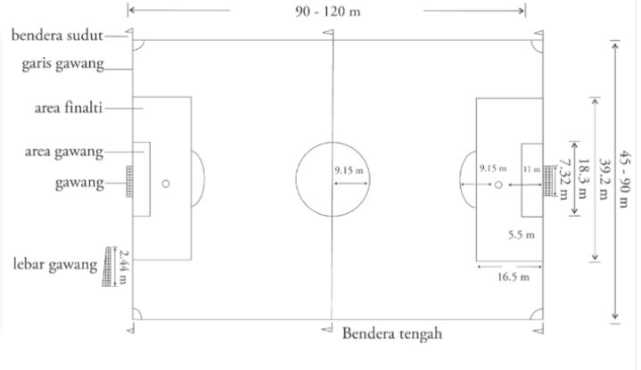

<- Kembali
Sepak Bola
5 Materi
Pengertian
Permainan sepak bola adalah permainan beregu dengan jumlah pemain dalam satu tim atau regu ada sebelas orang bertujuan untuk memasukkan bola ke gawang lawan sebanyak- banyaknya dan berusaha mencegah supaya gawang kita tidak kemasukkan bola oleh lawan. Di dalam sepak bola, setiap pemain memainkan bola dengan menggunakan seluruh anggota badan, kecuali tangan. Hanya penjaga gawang yang diperbolehkan menggunakan semua anggota badan selama dalam batas garis 16 meter.
Permainan sepak bola dimainkan dalam dua babak (2 x45 menit) dengan waktu istirahat 15 menit diantara kedua babak tersebut. Petugas resmi pertandingan sepak bola dipimpin oleh seorang wasit dan dibantu dua orang penjaga garis.
Sejarah
Sepak bola telah ada sejak zaman kuno, namun ada beberapa pendapat sepak bola berasal dari Inggris karena pada tahun 1963 Inggris memperkenalkan sejumlah aturan untuk diterapkan dalam olahraga sepak bola. Pada 26 Oktober 1863 Ebenezer Morley berinisiatif membentuk asosiasi sepak bola resmi dan terbentuklah FA yaitu The Football Association (FA) yang diikuti oleh perwakilan klub.
Karena di seluruh dunia banyak yang gemar bermain sepak bola, maka pada tanggal 21 Mei 1904 di Paris, Prancis terbentuklah suatu badan organisasi sepak bola berskala internasional dengan nama FIFA1 (Federation Internationale de Football Association). Di Indonesia sejarah Sepak bola sudah ada sejak tahun 1914, kemudian pada tanggal 19 April 1930 terbentuklah PSSI (Persatuan Sepak Bola Seluruh Indonesia) di Yogyakarta dengan ketua Soeratin Sosrosoegondo.
Sarana dan Peralatan
a. Lapangan Sepak Bola
Bentuk dan ukuran lapangan sepak bola adalah seperti berikut.
Keterangan:
* Panjang garis samping: 90 - 120 meter
* Lebar 45-90 meter
* Jari-jari lingkaran tengah 9,15 meter
* Daerah gawang: Panjang 18,32, lebar 5,5 meter.
* Daerah penalti: Panjang 40,32, lebar 16,5 meter.
* Jarak titik tendangan hukuman penalty dengan garis gawang 11 meter.
b. Gawang
Gawang yang digunakan dalam sepak bola memiliki ketentuan antara lain;
* Terbuat dari kayu atau besi dengan di cat warna putih.
* Tinggi gawang 2,4 meter.
* Lebar 7,3 meter
c. Bola
Ketentuan bola yang digunakan dalam permainan sepak bola antara lain terbuat dari bahan kuling, memiliki keliling bola 68-71cm, tekanan udara 0,60-0,70 atm, dan berat bola 396-453 gram.